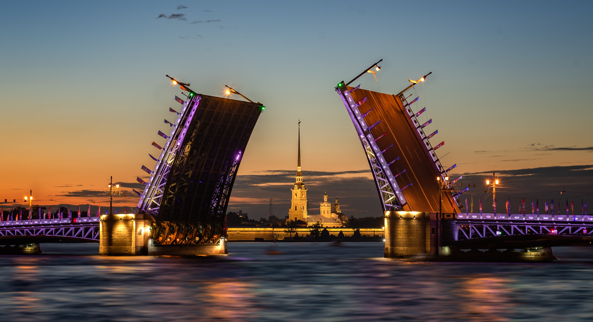

Welcome to Saint Petersburg
Saint Petersburg is a beautiful city with a rich history and vibrant culture.

Top Attractions
History
Saint Petersburg was founded by Peter the Great in 1703...
The Northern Capital, the City of Three Revolutions, the Cultural Capital, the Northern Palmyra, the City on the Neva, the Northern Venice, the City of White Nights - this is a far incomplete list of unofficial names of St. Petersburg. Each of them is like a brief characteristic that allows, even without looking in encyclopedias and reference books, to get an idea of its geographical position, historical significance, and role in modern Russia.
Contact Us
If you have any questions or need more information, please contact us - 8(983)777-77-77